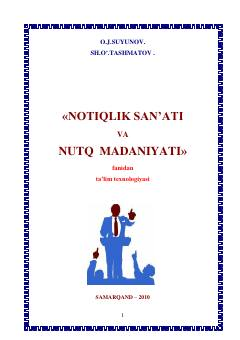

NSPedagoglar uchun notiqlik san'ati va nutq madaniyatini rivojlantirish bo'yicha o'quv qo'llanma.
Ushbu o'quv-uslubiy majmua notiqlik san'ati va nutq madaniyatining nazariy hamda amaliy asoslarini yoritib beradi. Kitobda pedagogik faoliyatda nutq madaniyatini shakllantirish, adabiy til normalari va notiqlik mahoratini rivojlantirish usullari batafsil bayon etilgan.